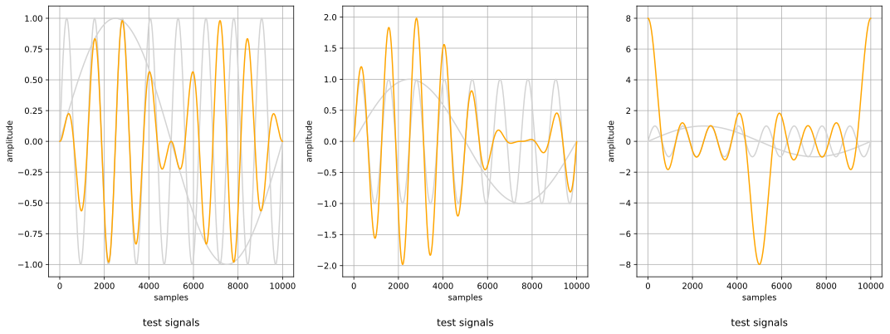
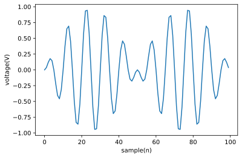
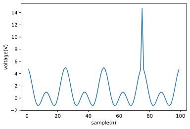
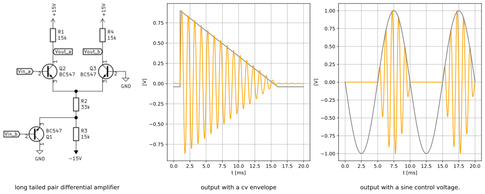
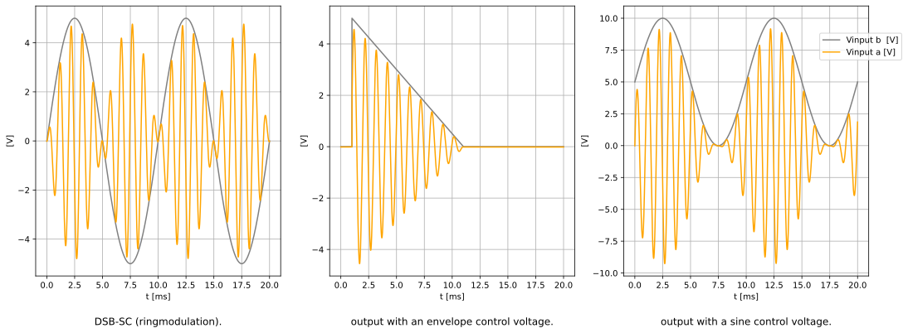
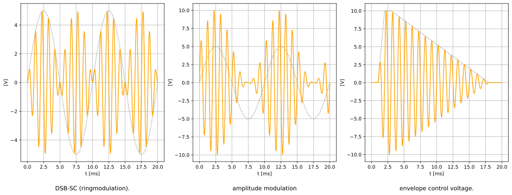

table of contents
pegel is a voltage controlled amplifier (vca). there are various designs to implement a vca. rod elliott (ESP) has an article on vca techniques [1]. diy synthesizer modules are usualy designed with an integrated vca chip [2] or with a differential amplifier [3]. the integrated vca chips are either obsolete or rather expensive. the differential amplifier can be built with transistors only. the design has some downsides. even in the simulation the result is not symetryc and has a dc offset from the control voltage. this needs a lot of trimming to get an accurate result. but the biggest downside is, that this design can not do proper amplitude modulation (am). when the carrier signal goes below zero the base signal is completely muted.
<ipython-input-1-6532caf98670>:32: RuntimeWarning: invalid value encountered in true_divide
ax2.plot(x2, y1 / y2, c='Orange') # differential output
Text(0.5, -0.2, 'test signals')

<ipython-input-1-897a87e281da>:6: RuntimeWarning: invalid value encountered in true_divide
y = ( np.sin(10 * np.pi * f * (x/fs)) / np.sin( 2 * np.pi * f * (x/fs)) )

more promising is it to use a four quadrant multiplier, also known as gilbert cell. the gilbert cell is designed around two differential amplifiers. the carrier signal switches between those. the result is a multiplication of the input voltages. the gilbert cell is mostly used for amplitude modulation in radio transmission. if you look at the integratd circuits like the 633 it can modulate signals up in the gigahertz range. the gilbert cell is not described in all details here, there is a good introduction from w2aew [4].

this is not real amplitude modulation. when the signal is negative the phase of the output is inverted. this can be adjusted by the bias voltage of the control voltage. the control voltage has to be positive at all time.
for the final circuit input and output buffering and biasing is needed. the buffering is done with opamps.
first we design the input stage. the input voltage for the X signal should be 10mV and 20mV for the control voltage.

test_am (__main__.TestInputVoltages) ... ok
test_ringmod (__main__.TestInputVoltages) ... ok
test_vca (__main__.TestInputVoltages) ... ok
----------------------------------------------------------------------
Ran 3 tests in 0.003s
OK
<unittest.main.TestProgram at 0x7f7bf23dcf10>{kind=link}